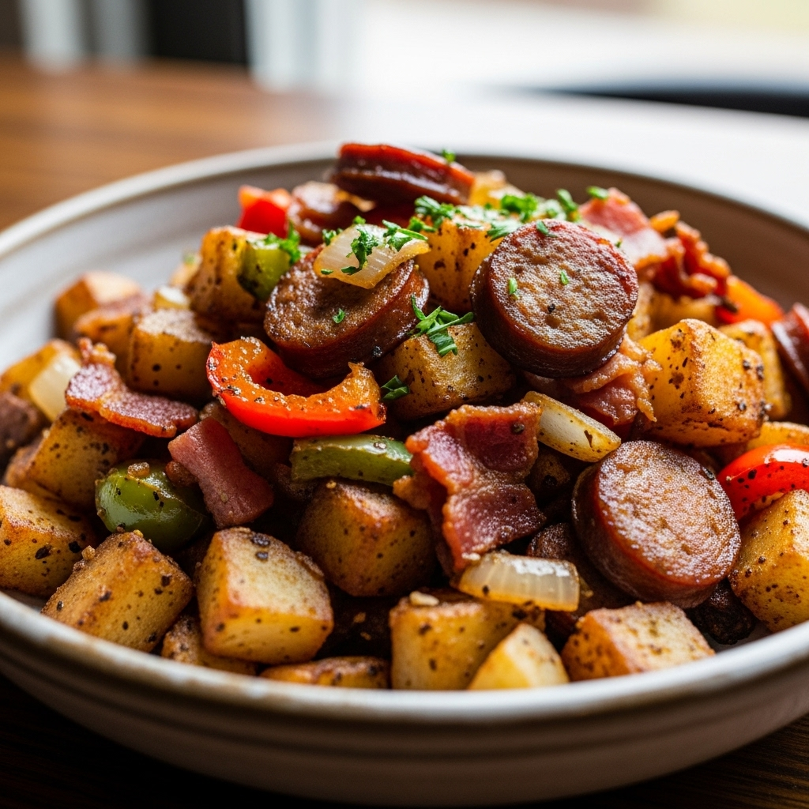

Hash

Description
This is an incomplete recipie generated by Microsoft Copilot
for a generic breakfast hash. If you really want to make hash
you will need more detail. Good luck!
Ingredients
- Potatoes
- Minced Onion
- Bell Pepper
- Ground Beef
- Seasoning
- Oil or Butter
Steps
- Prep Ingredients
- Par-Cook Potatoes
- Cook Meat
- Saute Veggies
- Add Potatoes
- Return Meat to the Dish
- Serve